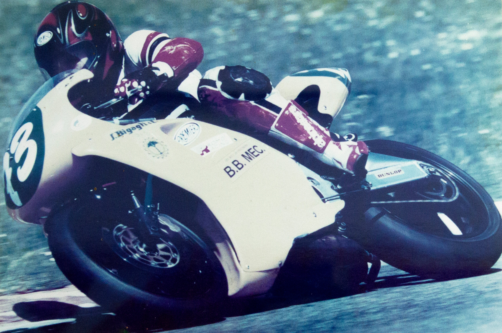

BB S.p.A. è un'azienda meccanica di precisione che produce accessori di alta qualità, realizzati
nei materiali più vari.
BB cura il ciclo produttivo dalla progettazione e realizzazione del
prototipo sino all'industrializzazione e alla produzione su larga
scala, secondo le specifiche del cliente.
BB, insieme alle aziende del gruppo BB Holding di cui
fa parte, è in grado di offrire al cliente un servizio completo, partendo dalla concezione stessa
dell'idea iniziale, fino a raggiungere la raffinatezza che contraddistingue l'accessorio in metallo prezioso
dell'oggettistica di lusso. Il suo raffinato prodotto di precisione si rivolge a una clientela che
esige la massima accuratezza delle rifiniture e la cui tipologia spazia nei settori più eterogenei
del mercato. BB S.p.A. nasce da un’idea di Marco Bartoletti, Presidente e Fondatore, che, appassionato della
meccanica di precisione, fonda nel 1990 B.B. MEC S.r.l.
I primi lavori riguardano la produzione di
impugnature per rasoi artigianali per specializzarsi in seguito nel settore dell’automotive: in
quegli anni B.B. MEC conta 2 dipendenti.
Nel 2000 avviene l’incontro con il primo importante marchio
di moda: è il momento in cui il settore aveva bisogno di un avvicinamento alla meccanica. Cresce la
necessità di una produzione su larga scala, di un prodotto ripetitivo che mantenga tuttavia la sua artigianalità
ed accuratezza.
Al primo cliente legato al settore della moda, negli anni se ne affiancano molti
altri: ad oggi BB collabora con i più importanti brand del lusso a livello
mondiale. L’azienda negli anni si amplia, al suo interno si creano vari reparti per curare
il ciclo completo dell’accessorio. Nel 2014 nasce l’ultima azienda del gruppo, BB
FEINMECHANIK, che con sede a Klagenfurt, si occupa della realizzazione di stampi a caldo e
componenti stampati.
L’intuizione e il sogno di un giovane imprenditore sono diventati una
solida ed affermata realtà nel tessuto industriale e sociale del territorio. BB ha da sempre investito in aggiornamento ed innovazione, puntando sullo sviluppo delle unità produttive, del
parco macchine, del personale, sempre altamente qualificato in ogni comparto, per
ogni lavorazione che l’accessorio richiede: dal disegno, dalla progettazione, alla galvanica, al montaggio, al
controllo qualità.
BB è passata dai 2 ai 250 dipendenti diretti di oggi, creando un indotto
di altrettanto valore.
Il team di BB è variegato in termini di competenze e professionalità:
a fianco dei reparti produttivi, si trovano gli uffici dove i responsabili della progettazione, gli addetti alla
pianificazione ed al controllo qualità integrano le rispettive professionalità alla continua ricerca
dell'eccellenza che contraddistingue l'azienda. Fondamentale è il reparto
commerciale di BB, il vero core business dell’azienda, il primo punto di riferimento per il
cliente.
In azienda sono inoltre presenti figure professionali specifiche come una
psicologa aziendale, disponibile per tutti i dipendenti, un team di professionisti
rivolto all’etica del lavoro, ed un ingegnere ambientale, con la quale BB porta
avanti progetti e ricerche sul tema sostenibilità.
BB si propone come partner
sicuro e affidabile per i propri clienti garantendo un servizio sempre più
completo, accurato e veloce, non limitandosi alla semplice progettazione e
costruzione di particolari metallici, ma partecipando attivamente al loro sviluppo.